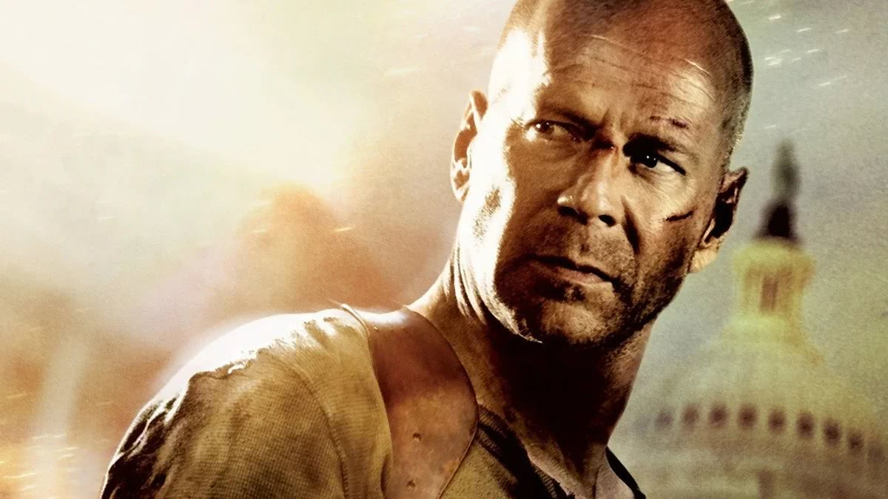

A família de Bruce Willis anunciou nesta quinta-feira (16) que o ator de 67 anos foi diagnosticado com demência frontotemporal (DFT). O ator se aposentou em 2022 depois de um diagnóstico de afasia. Desde então, sua condição progrediu.

Demência frontotemporal (DFT): o que é a doença que afeta Bruce Willis? Demência é a degeneração crônica, global e geralmente irreversível da cognição. Demência frontotemporal é responsável por até 10% das demências. Em geral, o início se dá em idade mais jovem (55 a 65 anos) que na doença de Alzheimer. A incidência das DFT (demência frontotemporal) é quase a mesma em homens e mulheres. Doença de Pick é um termo utilizado para descrever alterações patológicas na DFT, incluindo atrofia grave, perda neuronal, gliose e presença de neurônios anormais (células de Pick) contendo inclusões (corpos de Pick).
"Infelizmente, desafios com comunicação são apenas um sintoma da doença que Bruce enfrenta. Enquanto isso é doloroso, é um alívio finalmente chegar a um diagnóstico claro", afirmou a família do ator em comunicado no site da Associação para a Degeneração Frontotemporal. "DFT é uma doença cruel que muitos de nós nunca ouvimos falar e que pode atingir qualquer um. Para pessoas com menos de 60 anos, DFT é a forma mais comum de demência, e como o diagnóstico pode levar anos, DFT é provavelmente muito mais dominante do que sabemos. Atualmente, não há tratamentos para a doença, uma realidade que esperamos poder mudar nos anos à frente."
Walter Bruce Willis (Idar-Oberstein, 19 de março de 1955) é um ator norte-americano, nascido na Alemanha Ocidental. Ficou conhecido por protagonizar o seriado Moonlighting (1985–1989) e pelo papel de John McClane na popular franquia Die Hard, que o definiu como 'herói de ação' em diversos filmes do gênero. Estourou na televisão ao lado de Cybill Shepherd na série "A gata e o rato". Em uma das pausas da série, ele foi convidado para atuar em "Duro de matar" (1988). Foi quando a carreira em Hollywood decolou. O filme de ação teve quatro continuações. Ele também ficou muito conhecido em filmes como "Pulp Fiction: Tempo de Violência" (1994), "Armageddon" (1998) e "O Sexto Sentido" (1999). Willis e a atriz Demi Moore foram casados por 13 anos e tiveram três filhas (Rumer, Tallulah e Scout). Com sua atual esposa, a modelo Emma Heming Willis, ele tem outras duas filhas (Evelyn e Mabel). Willis é vencedor de dois Prêmios Emmy e um Globo de Ouro. Os filmes estrelados por ele arrecadaram sete bilhões nas bilheterias mundiais, tornando-o o oitavo ator com maior bilheteria na história do cinema.
